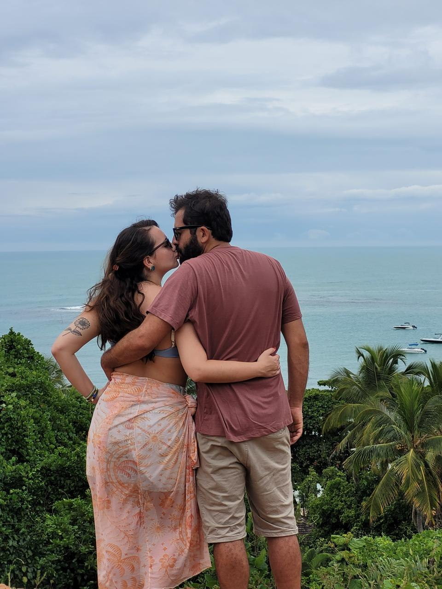

Correio do Amor
“Folha dedicada às boas notícias do coração”
Ano I · Nº 1 Sábado, 20 de março de 2027 Edição Extra
Alexandre & Mariana vão se casar!
Juntos há quatro anos, o casal confirma a união para março de 2027 e convida familiares e amigos para a celebração

É oficial: Alexandre e Mariana vão subir ao altar no dia 20 de março de 2027. A notícia, que já corria de boca em boca entre parentes e amigos, foi confirmada pelo próprio casal a esta redação.
Tudo começou há quatro anos, num fim de ano colorido pela primavera, quando os dois esperavam, sentados, por uma simples cerveja. Veio o primeiro beijo e, segundo testemunhas, foi amor à primeira vista.
De lá para cá, a dentista e professora nascida em Araguaína e o porto-alegrense que vive de eternizar momentos pelas lentes somaram viagens, mudanças e três gatos, que hoje dividem com eles o calor da casa.
Nesta edição extra, o leitor confere o perfil dos noivos, a história do casal e, nos classificados, a lista de presentes. A redação deseja aos dois uma vida inteira de viagens, cafunés e boas notícias para contar.